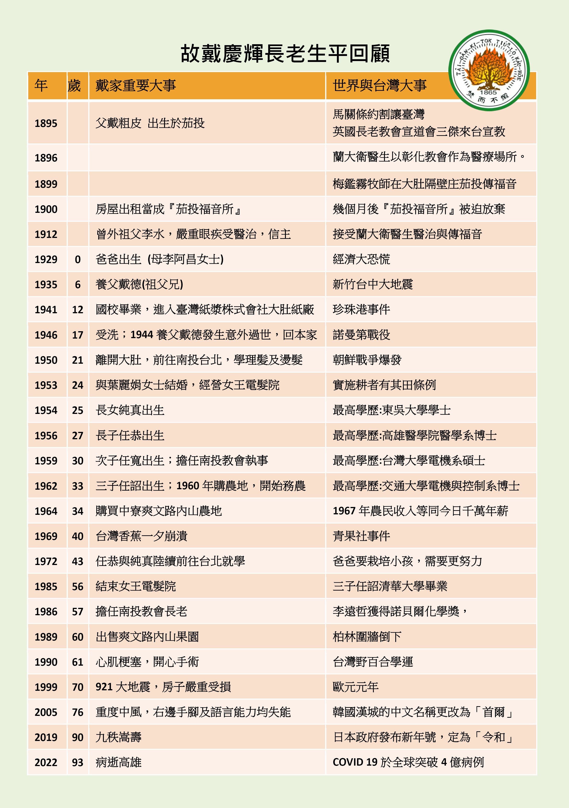

故人略歷
靠主得勝的人生
慶輝長老於主後1929年12月18日，誕生於台中霧峰庄尖後小村落，一個田產豐富的信主務農家庭，父親戴粗皮，母親李阿昌，育有五男五女共10人，慶輝排行第五。因二伯父戴德膝下無子，於6歲時過繼登記為養子，瞬間割捨原生家庭親情，入籍大肚鄉龍東村茄投，12歲養父戴德因農務時不慎跌落山谷身亡，慶輝即離開未信主的養父母家，重回親生父母親懷抱，重享天倫之樂！
24歲經由南投教會陳梓和長老介紹，和主內葉和、陳審夫婦的長女麗娟姐妹結婚，旋即租屋開設「女王電髮院」，白手起家，蒙上帝賜福，生意興旺，麗娟婚後認真學習電髮技術，資質聰慧，迅速地成為廣受佳評的專業美髮師，兼顧家庭和工作，勤儉持家，展現強韌生命力，夫婦二人同心協力共組和樂基督化家庭，共育有一女三男，純眞和任恭、任寬、任詔。
慶輝長老夫婦極重視子女教育栽培，感謝上帝恩典，四人均陸續順利完成學業，並服務於公職、醫療、科技和教育等各領域，敬業樂群，貢獻所學和才能於社會，且熱心教會服事，分屬於新營新生教會、高雄德生教會、台北南門教會和新竹公園教會，恪遵慶輝長老的身教言教：「敬畏上帝，靠主得勝，榮耀主名」，實為「至於我和我家，我們必定事奉耶和華。」（約書亞記24：15）的最佳寫照！
慶輝長老信仰之路，始於龍井國小畢業後，於日本製糖公司所屬的台灣紙漿株式會社大肚場任職技術工人，在大肚教會聚會，17歲由呂春長牧師施洗歸主名下；也認識了主內同事鄭漢堆（台北市第一教會長老）和謝穎男（曾任台神院長），是互相照顧、屬靈好同伴；同時聘請呂牧師為漢文家教，努力學習，期能增進語文能力和信仰裝備，盡心盡力為主工作！
30歲受南投教會設立執事，57歲封立長老，71歲設立名譽長老，曾任松年團契會長，無論是各種事工或協助喪家安葬及節期話劇…等，均隨時機動積極參與，並能勝任愉快達成任務，誠心誠意願為主用，成為蒙喜悅的器皿！
由於曾經風光一時的電髮行業日趨競爭薄利，為增加家庭收入，慶輝轉行務農，買下田園辛勤耕耘，新手上路諸多困難，常虛心向有經驗的農友請益，加上自我研究，並運用智慧突破，排除問題練就一身好功夫！所栽種的各種水果，都是外銷入選率最高，品質保證、賣相佳，深受肯定！其務農生涯長達約40年，充滿高山低谷有豐收也有苦難，經歷種種辛勞險象和身體折損，全蒙上帝憐憫化險為夷！「雖然行過死蔭谷，也不怕災害，因祢與我同在！」（詩篇23：4）。
61歲北上觀賞總統府閱兵儀式後，中午休息時，突呼吸困難身體不適，經送醫診斷為心肌梗塞，並轉台大醫院實行開心臟手術。
75歲重度中風，右側手腳及語言失能，經任恭安排至高醫治療，出院後即接回同住，並僱請外勞照顧，期間又數度中風，均得到最好的醫治與照顧。 在長達17年的臥病期間，親朋好友時常前往關心探視，慶輝及家人得到最大的安慰並滿心感謝；雖無法言語，卻能吟唱喜愛的聖詩，在患難中為眾子孫們禱告，祈求上帝恩手扶持和保守，平安喜樂！
2019年12月18日慶輝長老九十嵩壽，於高雄德生教會舉行感恩禮拜，親朋好友齊聚一堂，蒙上帝憐憫賜福，是人生最歡樂感謝的時刻！
2021年12月中旬慶輝長老因病住院，期間努力面對病情，經醫療團隊全力救助，於2022年2月1日清晨歸回天家，享年93歲。
慶輝長老終其一生勤奮熱情，勇敢挑戰和承擔的精神，盡其所能不辭勞苦為主做工的身影，常存你我心中！人生多采多姿又美好的仗已完成，安息主懷，永享平靜安穩！
「恩典及慈悲的確隨我到一世人，我欲永遠徛起佇耶和華的厝」(詩篇23:6)
故人大事年表
三子 戴任詔

愛家愛神、聰明勤儉的父親
次子 戴任寬
我的爸爸在我們家兄、弟、姊中大家公認最疼我，確實也是如此。我高中、大學都是他帶我去報到，我目前還在穿的多套西裝，是他幫我訂製的；我成家也是爸爸一路扶持幫助，先協助我經友人介紹找到美麗、賢慧的妻子淑蘭，在預備婚禮前就資助我們部分資金在台北買房子、購買家具、裝鐵窗，房子的粉刷也是由他一手完成，讓我一結婚就成為有屋族；之後因我們夫妻工作很忙，兩個兒子光裕、光斌在嬰幼兒時期，有一段時間是他與媽媽在南投幫我們照顧，這些恩情真是大。
爸爸很注重我們的信仰，要求我們從國小就必須參加週六晚上的兒童禱告會和禮拜天上午的主日學，讓我們每週去教會成為習慣，信仰的種子深植在我們每個人身上；在家裡常常舉行家庭禮拜，每年復活節清晨的朝陽禮拜一定全員參加，雖然家庭經濟拮据，他仍堅持月定奉獻，讓我們全家把這些都當成習慣，凡事感謝與倚靠神。
我的爸爸是一位勤勞節儉、勇於接受挑戰與不斷學習新知的人，他從造紙工人到學習理髮(我們的頭髮都是他理的)、經營女子燙髮院，再到經營農場種植各類果樹，都出類拔萃。
每年學期結束，是荔枝採收期，我自交通大學放暑假返鄉，都會協助爸爸一起去採收水果。西元1981年夏天荔枝的採收期，我和他清晨5點前就從南投出發，他新手上路以時速超過40公里開著大型農用拼裝車，循著山區道路抵達距離我們中寮鄉爽文路農場最近的馬路邊，下車後走約20分鐘的山路抵達農園；先採收一些荔枝，讓後續到達的整理工人(女工)一到就有荔枝可開始整理分類；再帶領採收工人(須爬上樹)一起採收，期間要將整理好的荔枝裝進大竹簍打包，讓挑夫(一位虎背熊腰的工人，每趟兩大竹簍可領取100元工資，一天約7趟)可開始挑到停車處，爸爸除採收(動作快速，比其他工人都採得多)、打包外，也會挑2～3趟，最後一趟偶而會碰到午後大雨溪水暴漲，需冒險穿越高及腰深的河水，涉溪而過(他都要我繞道另一安全路線自行返家)。到達停車處後，把約20個大竹簍的荔枝，移至車上綁好，載到貨運行秤重直配台北果菜市場，再回南投結束忙碌的一天。
爸爸雖然國小畢業而已，但勤勉自學，文筆、講道都不錯，也寫得一手好字，喜好拍照、錄影，60歲後並學習使用電腦將影片轉為數位格式，分享給親友。也曾參加中會松年部在埔里開設的英語會話初級班，學習永不嫌晚！爸爸還會修理家中水電、抽水馬達、砌磚塊、粉刷牆壁…等，很節儉的用二手機車、拆船貨品、回收物品…等，DIY化平凡為神奇。
父親真是一位值得我們學習的愛神、愛人、惜物、有智慧的好爸爸，永遠值得我們懷念。
「敬畏耶和華是智慧的開端；凡遵行他命令的是聰明人。耶和華是永遠當讚美的！」(詩篇111:10)
我的爸爸戴慶輝長老
三子 戴任詔
在高中以前，爸爸在我印象中，他的職業是從事農事與電頭毛，我還記得，剛讀小學時，有一次作文，題目是我的爸爸，我就寫我爸爸常常去坐山(作的台語發音類似坐)，也寫到，爸爸有一次帶我與媽媽到山上坐山，回家途中，路非常難走，又下雨，爸爸就把我放在米籮內，蓋個布防雨，然後挑著我與農作物下山，令人難忘。在電頭毛部分，他擁有古老技術，家中有一台電燙夾，可以立即塑造髮型，但是如果不會操作，頭髮會烤焦冒煙，甚至燙傷，但他操作自如，從來沒有失手過。
他年輕時曾在紙廠服務，學過很多技術，所以家裡或山上所有物品，他應該都會修理，家裡水管與抽水機，都是他親自配管與修理；他也會設計房子與蓋房子，以前位於南投國小的老家，外觀是三層樓，裡面好像有五層至六層，已經有樓中樓概念，設計與實現能力相當好。
爸爸能力強，口才好，做事情效率很好，可能這樣，造成他個性比較急，當看到別人無法達到他的標準，就會用嚴厲的話語糾正別人，應該也得罪很多人，也讓子孫們心生壓力；他很重感情，喜歡在宴席上跟別人培養感情，有時會多喝了點酒，曾因此出了些意外狀況，讓家人受驚，尤其是我媽媽；爸爸個性急的特性，也為他帶來一些傷痛，例如他曾經在農事中，砍斷自己手指，不過蒙上帝保守，手指有接回去。
他在務農過程中，也有相當傑出表現，會種很多農作物，例如香蕉、鳳梨、龍眼、荔枝、柳丁、樹薯、芋頭、木瓜與柚子等水果；務農時期，他工作的地點，沒有電力，交通相當不方便，有時下大雨，還有土石流，爸爸也曾因土石流，差一點被水沖走，他很會挑重物，可以挑超過百廿斤重物，但也因此造成腳膝蓋關節嚴重變形受損，肩膀也變型水牛肩，還換過兩次人工關節。
我爸爸相當多才多藝，我出生當日是復活節，當晚正在教會演話劇，飾演酋長，故事應該是1950年代初，來自美國的宣教士艾略特 (Jim Elliot)的自我犧牲的故事。爸爸非常會製造生活的樂趣，在姊姊國小四年級之前，都真的以為每年聖誕老公公於聖誕節深夜悄悄來家中，送各式各樣的禮物給我們。有才華的爸爸，因為責任心，要養家培養小孩，教育費負擔甚重，所以願意竭力付出，值得學習。
教會服事方面，有一次我在主日學，聽到老師說爸爸令人敬佩的作為，爸爸願意用手去挖教會已長期阻塞的馬桶，讓他深受感動，我才開始知道爸爸是一位願意為 神付出的人。我讀高中後，爸爸開始有比較多時間參與教會事工，主要應該是探訪與喪事服務，早期沒有禮儀公司，爸爸都會協助喪家處理遺體、棺木選定、埋葬地點等事宜，很多事蹟是爸爸生病後，才間接知道爸爸關懷過很多家庭，大家都很感謝他。他也喜歡照相，應該是受我大伯父影響，他也學大伯父樂於分享，錄影完，製作VCD送人，為了製作VCD，爸爸中風前還努力學習電腦，好學不倦與分享的熱誠，令人敬佩。
1989到台北看國慶閲兵和煙火時，心肌梗塞，煙火沒看成，住進台大醫院，接受心導管手術，住院約一個月，出院後，還曾進行心臟冠狀動脈繞道手術；晚年因為沒有持續吃藥與控制身體疾病，導致2005/03/12 (六)左腦栓塞中風，右側身體無法控制 並喪失語言能力，先住院治療半年多，再移居高雄大哥家，感謝 上帝，我大哥任職於高醫大，讓爸爸能夠有非常優質的醫療品質，陪伴他度過17年漫長的復健之路。
爸爸喜歡詩歌讚美 上帝，喪失語言能力的中風病人，並不會喪失唱歌能力，所以生病後，仍有跟我們唱詩歌讚美 上帝。安息主懷前，最後在加護病房期間，我和美生及女兒涵妮涵芸都和爸爸一同唱詩歌，一同感謝上帝照顧。
「耶和華是我的牧者，我必不至缺乏。他使我躺臥在青草地上，領我在可安歇的水邊。」(詩篇23:1~2)
永遠的榜樣
外孫女 宜君/宜珊/宜庭
台語聖詩「細漢囝仔的朋友，是是誰？是是誰？細漢囝仔的朋友，是我主耶穌……..」，旋律輕快簡單，小時候每次回南投外公家總是要<考試>，比的不是學業或成績，而是問：「妳們會唱教會主日學教的哪些詩歌？」也因為這樣，幫我們牽起了與主當朋友的感情線！
我們姊妹三人幼童時期，都曾經前後陸續住在南投中興路阿公阿嬤家，無論是清晨起床號或睡前催眠曲，外公總是大聲清唱台語聖詩陪伴我們。外公也常勉勵我們要認真學習彈奏鋼琴，才能擔任教會司琴事工，得到上帝的喜悅和賜福！
1991年外公專程自南投到新營，送我們一本很厚重又有彩色插圖的<365兒童聖經故事>(天道書樓)，尤其推薦其中最精彩的「但以理獅子坑」和「大衛戰勝歌利亞」故事。相信此書是外公對我們最棒的心意和最珍貴的傳家寶！
外公宏亮的聲音，開朗的笑容，快速的動作，愛之深責之切的教導和常常騎著重型機車，外出訪友或工作…..，諸多美好的回憶，令人印象深刻。
外公多年前無預警中風，對他來說是莫大的考驗，但沒有因此擊垮他心中對主的愛；雖然無法行走活動、自主表達，但只要聽到詩歌，都可以看見他陶醉的神情且自然哼出聲讚美著，感覺像是沈浸在主的懷抱裡，很喜樂！
如今，外公卸下身心的重擔，平靜安詳的回天家，但您的勇敢、毅力和對主渴慕的心，是我們永遠的榜樣，謝謝您！
凡事包容，凡事相信，凡事盼望，凡事忍耐。愛是永不止息。(哥林多前書13:7-8)
蒙福的爺爺
孫子 光裕/光斌
印象中的爺爺非常多才多藝，會自己蓋房子(921也是靠自己重建），會種植很多蔬菜、水果（回去一定有吃不完的香蕉、皇帝豆），積極參與教會活動（小時候的台語及詩歌都是跟著爺爺到處去耳濡目染的），熱衷錄影（我爸媽的邂逅以至於有我跟光斌，都是因為爺爺跟朋友的朋友交流作品，才有的電影般情節），會自製很多東西（印象最深刻的是蘿蔔糕），很會下棋（小時候經常被爺爺電）等等，這樣厲害的一位傳奇人物，卻被中風的身軀捆綁了17年！
「那美好的仗我已經打過了，當跑的路我已經跑盡了，所信的道我已經守住了。」爺爺您辛苦了，地上的勞苦已然結束，終於可以到天堂繼續發揮您的長才了。